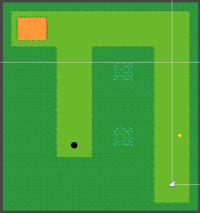

Christopher's Portfolio
Stroke of Fate
Stroke of Fate is a roguelike mini-golf deckbuilder where you stack wild multipliers and game-bending ball upgrades to turn impossible pars into legendary high-score runs. This game combines the thrill of high-stakes deckbuilding strategy with the intensity of precisely making mini-golf shots under pressure. One missed shot and your perfect build is gone. Alongside classic rogue-like strategy elements, this game also includes stats for golf balls, such as power and bounciness, like stats of characters in popular RPG games.

